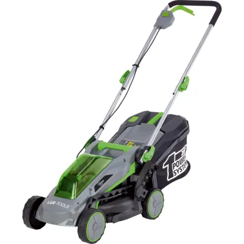
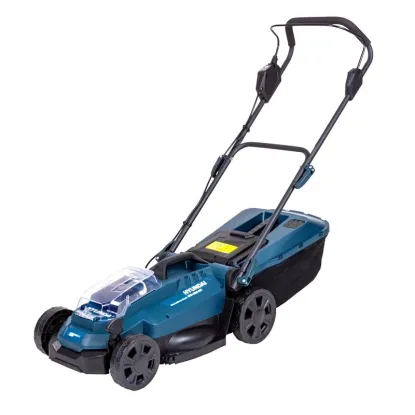
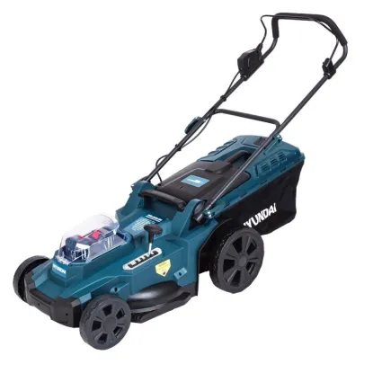
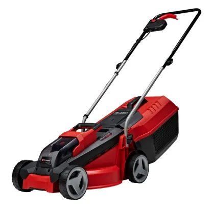
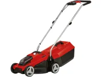
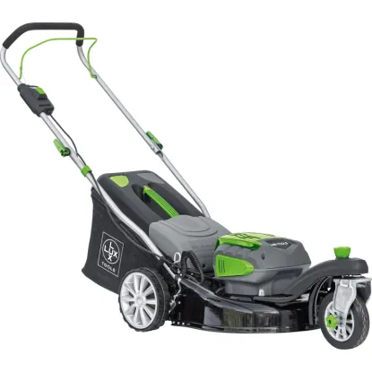
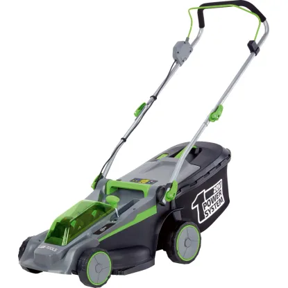
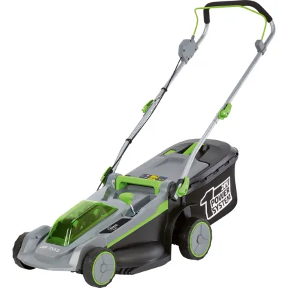
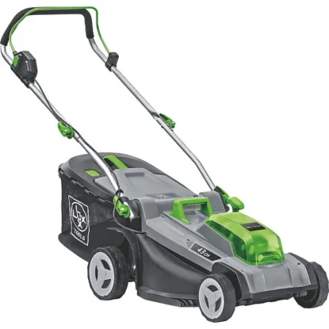

A LUX-TOOLS A-RM-1x20/33 akkumulátoros fűnyíró kényelmes és hatékony megoldást kínál legfeljebb 150 négyzetméteres gyepfelületekhez. Kefe nélküli motorjával nagy teljesítményt és hosszabb élettartamot biztosít. 20 V-os akkumulátorral működik (a 4,0 Ah-s akkumulátorral és a gyorstöltő készülékkel együtt), így kábelektől függetlenül dolgozhat. A második akkumulátortartónak köszönhetően a tartalék akkumulátor kényelmesen tárolható.

A HYUNDAI HYD-4330-20V akkumulátorral felszerelt fűnyíró gondoskodik a gyepről az otthoni kertben, valamit az akkumulátornak köszönhetően többé nincsennek összekuszálódó kábelek, a készülék korlátlan mozgásszabadságot biztosít. Az akkumulátoros fűnyíró a HYUNDAI termékcsalád tagja, amelyben akkumulátor, töltő és rendszerkészülék rugalmasan kombinálható. A fűnyíró 1 darab akkumulátorral működik.

A HYUNDAI HYD-4430-40V két darab akkumulátorral felszerelt fűnyíró gondoskodik a gyepről az otthoni kertben, valamit az akkumulátokonak köszönhetően többé nincsennek összekuszálódó kábelek, a készülék korlátlan mozgásszabadságot biztosít. Az akkumulátoros fűnyíró a HYUNDAI termékcsalád tagja, amelyben minden akkumulátor, töltő és rendszerkészülék rugalmasan kombinálható.

Az Einhell Power X-Change GE-CM 18/30 Li akkumulátoros fűnyíró kisebb méretű, legfeljebb 150 m2 gyepfelülettel rendelkező kertekhez alkalmas. Az akkumulátoros működés rugalmas és csendes használatot tesz lehetővé anélkül, hogy konnektorhoz lenne kötve és kipufogógázokat bocsátana ki. Így kisebb városi kertekhez ideális.

Az Einhell GE-CM 18/32 Li-Solo akkumulátoros fűnyíró nélkülözhetetlen segítőtárs, ha a gyep megfelelő gondozásáról van szó. A fűnyírót legfeljebb 180 négyzetméteres felületre tervezték, és a fűnyírást automatikusan elvégzi Ön helyett.

A fű hossza így 25 mm és 75 mm között egyedileg beállítható. 40 cm-es vágásszélességével optimális nagyobb, akár 280 m²-es zöldterületek gondozására.

A LUX-TOOLS A-RM-2x20/37 akkumulátoros fűnyíró kefe nélküli motorral rendelkezik, amely maximális teljesítményt és hosszabb élettartamot biztosít. A 37 cm-es vágásszélességnek köszönhetően és a 6 fokozatú, 25 és 75 mm közötti központi vágásmagasság-állító segítségével a vágási magasságot rugalmasan saját igényeihez igazíthatja. Két nagyteljesítményű 20 V-os Li-Ion akkumulátorral (egyenként 4,0 Ah) működik, amelyek a mellékelt kettős gyorstöltőnek köszönhetően rövid idő alatt újra használatra készek.

A LUX-TOOLS A-RM-2x20/43 akkumulátoros fűnyíró maximális hatékonyságot és kényelmet kínál a gyep ápolása során. A 43 cm-es vágásszélességgel és a nagy teljesítményű kefe nélküli motorral akár 550 négyzetméteres felülettel is könnyedén megbirkózik. A 2 db 20 V-os, 4,0 Ah kapacitású Li-Ion akkumulátorok megbízható energiaforrásként funkcionálnak, és a kettős töltővel gyorsan feltölthetők. Magassága fokozatmentesen állítható vezetőnyílásának köszönhetően a fűnyíró tökéletesen alkalmazkodik a munkához, és kíméli a hátát.

A LUX-TOOLS A-RM-2x20/43 akkumulátoros fűnyírókészlettel Ön optimálisan és környezetbarát módon nyírja és gondozza a gyepet. A robusztus, de mégis könnyű műanyagházzal rendelkező fűnyíró segítségével a modern technikának köszönhetően szépen gondozott és akkurátusan levágott zöld felületet hozhatunk létre. A motor akkumulátorral működik, ezért nagyon halk és nem bocsát ki káros gázokat. Nincsenek többé összekuszálódó kábelek, és a készülék korlátlan mozgásszabadságot biztosít.